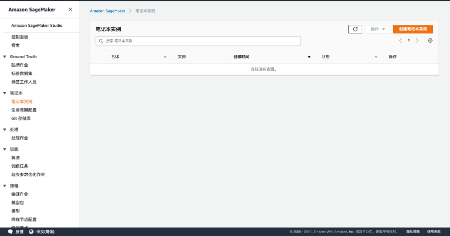

要完成所有的实验，大概需要 1 小时。
登陆AWS账号，切换到美东区域us-east-1，打开 SageMaker Jupyter Notebook 控制台: https://console.aws.amazon.com/sagemaker/home?region=us-east-1#/notebook-instances

然后创建笔记本实例：
ml.t3.medium等待笔记本实例从 Pending 状态变成 InService 状态后，点击 “打开 JupyterLab”。
在Jupyter Notebook下载实验材料
cd /home/ec2-user/SageMaker/
wget https://sagemaker-ap-southeast-1-249517808360.s3-ap-southeast-1.amazonaws.com/amazon-sagemaker-custom-recommend-system_chengdu.zip
unzip amazon-sagemaker-custom-recommend-system_chengdu.zip -d amazon-sagemaker-custom-recommend-system
当然，也可以手工下载如下的附件并上传到notebook里面去（获取url直接wget）
打开 model-training-notebook.ipynb，（用 conda_tensorflow_p36 内核）
依次运行每个代码块即可。
实验结束后，记得关闭Jupyter Notebook。
文档和版权信息
本章作者： Yuejun Qiu
~完~